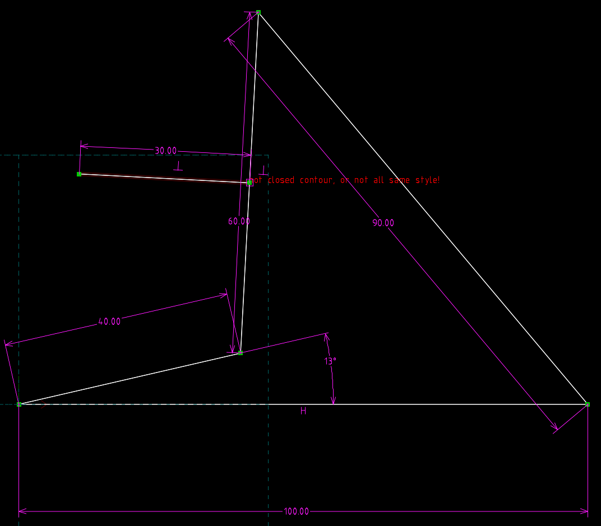

Exam <<
Previous Next >> Exam2
Exam1
Exam1 (10%): 建立 Webots 基本物件模擬場景
操作影片標題: 國立虎尾科技大學 - 機械設計工程系 - cd2025 Exam1 - 41023213
1.以Robot為基礎建立base與link1的hingejoint
2. base長度為1 厚度寬度皆為0.1
3. joint1位置位置-0.5 0 0
link1位置-0.5 0 0.1 pose位置0.2 0 0 角度0.226(13度) 長度0.4
4. joint2位置0.4 0 0
link2位置0.4 0 0.1 pose位置0.3 0 0 角度1.291 長度0.6
link2短軸pose位置0.3 0.15 0 長度0.3
5.joint3位置0.6 0 0
link3位置0.6 0 -0.1 pose位置0.45 0 0 角度2.391 長度0.9
6.joint4位置0.9 0 0 solidreference接static environment
7.link1 2 3 啟用boundingobject pose 跟 physics
8.link1 device啟用rotationalmotor
9.controller加入程式

連桿旋轉角度為13度時的Solvespace線架構圖
心得:與HW1大致相同，多了起始角度的變化，需要將要求的角度轉換為rad
Exam1_41023213
相關問題
-
製作此場景時，WorldInfo 節點有何作用？
WorldInfo 節點提供場景的全域設定資訊。
-
Viewpoint 節點的主要功能是什麼？
Viewpoint 節點決定使用者觀看場景的視角。
-
TexturedBackground 與 TexturedBackgroundLight 在場景中負責什麼？
TexturedBackground 負責背景圖像顯示，TexturedBackgroundLight 調整背景光線。
-
Robot 節點在此場景中代表什麼角色？
Robot 節點代表場景中的機器人模型。
-
base Solid 節點的功能為何？
base Solid 節點作為機器人底座或支撐結構。
-
Shape 與 Appearance 節點如何用於物件外觀設定？
Shape 定義物件形狀，Appearance 設定材質與外觀。
-
HingeJoint 節點的用途與基本參數有哪些？
HingeJoint 用於連接可旋轉的零件，基本參數有 axis、anchor。
-
HingeJointParameters 節點中的 axis 與 anchor 分別代表什麼？
axis 是旋轉軸方向，anchor 是旋轉中心點。
-
RotationalMotor 裝置如何與 HingeJoint 結合？
RotationalMotor 控制 HingeJoint 的旋轉動作。
-
Solid 節點與 boundingObject 的關係為何？
Solid 節點的 boundingObject 定義碰撞邊界。
-
link1、link2、link3 各自代表什麼結構？
link1、link2、link3 分別是機器人的不同連桿結構。
-
Pose 節點的功能與使用時機？
Pose 節點設定物件位置與方向，常用於子節點定位。
-
geometry Box 如何設定形狀尺寸？
geometry Box 用 size 屬性設定長寬高尺寸。
-
material Material 內的 diffuseColor 如何影響外觀？
diffuseColor 控制材質的基本色彩。
-
transparency 參數設定對外觀有何影響？
transparency 設定物件的透明度。
-
endPoint 屬性在 HingeJoint 結構中的意義？
endPoint 定義 HingeJoint 的終點位置。
-
Robot 節點中 children 陣列的作用？
Robot 節點中 children 陣列包含機器人的子組件。
-
physics Physics 節點的功能？
physics 節點定義物理屬性與模擬參數。
-
SolidReference 如何實現多關節結構的連結？
SolidReference 用於多連結結構的關節連接。
-
controller 屬性如何指定機器人控制程式？
controller 屬性指定機器人的控制程式。
-
DEF 與 USE 的差異與用途？
DEF 是定義節點名稱，USE 是重複使用已定義節點。
-
translation 與 rotation 如何決定物件在 3D 空間的位置與朝向？
translation 決定位置，rotation 決定方向與角度。
-
何謂 boundingObject？為何要指定？
boundingObject 是用來定義碰撞範圍，避免物理錯誤。
-
為什麼 link2 會包含 Pose 及多個子 Shape？
link2 包含 Pose 與多 Shape 以組合複雜形狀。
-
anchor 參數如何影響關節的運動中心？
anchor 決定關節的旋轉中心點位置。
-
四連桿結構在此場景的設計意圖為何？
四連桿結構用於模擬複雜的機械連桿運動。
-
如何在 Webots 檢查各關節的運動範圍？
可在 Webots 中利用關節設定檢查運動範圍。
-
若要讓 link3 可動，需在何處設定馬達？
讓 link3 可動需在其 HingeJoint 中設定馬達。
-
場景中透明的 base 有什麼作用？
透明的 base 作為視覺上的參考底座。
-
製作此場景時，應注意哪些結構層級與命名規則？
製作場景時應保持結構清晰與命名一致。
Exam <<
Previous Next >> Exam2